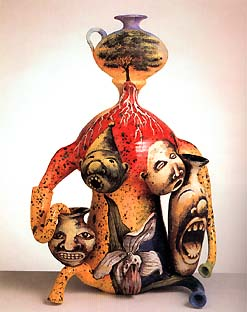
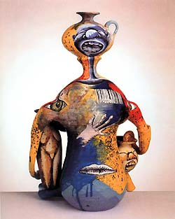
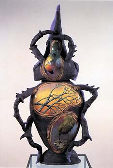

| Michael
Lucero
American clay sculptor
During
his early period Michael
Lucero made composite sculptures using hundreds of thin,
hand-made tiles which were attached to wire frames. Often these
would be human figures, but sometimes animal forms. Already in these
early works, one can see combinations of human/animal, culture/nature,
architecture/organism that have remained an element in Lucero's
subsequent work.
In his next 'Dreamer' series, Lucero made Pink Nude Dreamer,
which consists of the head form that Lucero repeatedly uses for
this series. It is decorated with a range of painted scenes reflecting
Lucero's early undergraduate training in painting at Humboldt State
University in California.
Employing
painted underglazes and sgraffito on a shape that doesn't directly
relate to the imagery, we see typical painterly elements of Lucero's
work that he has become so well known for. One cannot but help getting
a distinct feeling of surrealism here. The fantastic images Lucero
paints on his forms seem to spring from the sub-conscious and speak
to sub-conscious strands of the viewers mind.
Lucero's interest in the Native American Pueblo dates back to
his childhood travels from California to relatives in New Mexico.
Here he would come into contact with American Natives and their
culture. Native American rugs, jewelry, sculpture and ceramics would
come to influence Lucero in his later life. The Californian and
New Mexican environment also supplied the artist with a rich abundance
of animal life, especially reptiles and amphibians that he loved
as a child and employed in his imagery later in life.
This
is especially the case in his 'Earth Images' installation. Here
we are presented with the Hercules Beetle of 1986 (pictured
left). The fantastic, upright beetle is distorted and again surreal,
painted with images of trees on the one hand and míro-like color
fields on the other. Here, nature and culture collide. A closer
inspection of the head reveals a pale, haunting ghost-like figure
and scenery, perhaps suggesting stories of Native American medicine
men or their people's beliefs. The overall effect is one of a bio-morphic
enigma of disparate elements that nonetheless has a naturalness
about it.
Lucero pays homage to the pueblo in his 'Pre-Columbus' series,
which consists of distorted seated figures, glazed in bright colors
and painted with environmental scenes juxtaposed with screaming
heads and pueblo pottery. Pre-columbian art contrasts with classical
and modern painting traditions. The bar code and the tea-pot create
a reference to the modern world and in a sense pre-empt Lucero's
next series, the 'New World' series (e.g. Lady with Roots,
pictured top left), which deals with the radical changes Columbus'
discovery of the New World inflicted on the continent.
In
the 'Reclamation' series, the artist incorporated his love
of collecting antiques and novelties into his art work. Lucero took
'found' objects and added to them, creating totally new and compelling
works. This series includes the work Angola Carolina which
consists of a head in the form of a keg with a large painted beetle
as the nose. The piece is reminiscent of the work of American ceramic
artist George Ohr (1857-1918) whose work Lucero admires and collects
fervently.
More Articles
More Artists of the Week
|